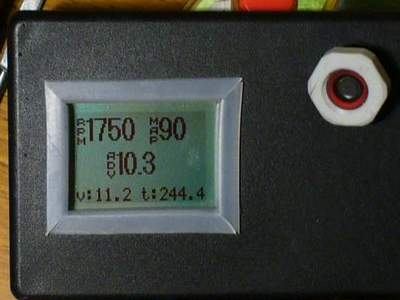
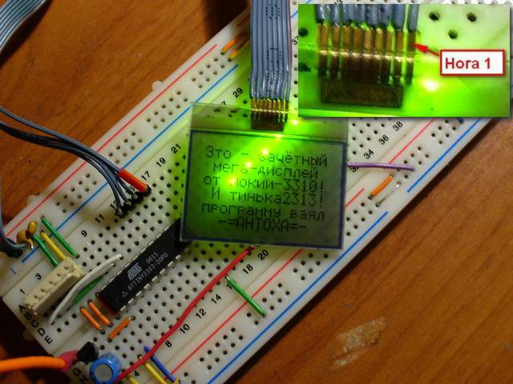
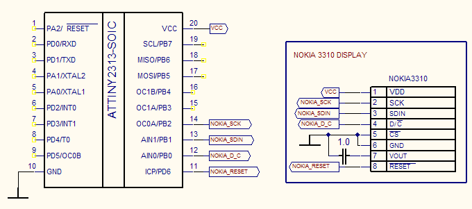

Подключение дисплея от сотового телефона Nokia 3310 к микроконтроллеру AtTiny2313.
Графический дисплей от телефона Nokia 3310 достаточно распространён, дёшев и имеет весьма простой интерфейс. Поэтому он часто используется в любительских проектах. При использовании шрифта 5x7 точек получается 6 строчек по 14 символов, что значительно приятнее обычных 2x8 или 2x16. Плюс к тому, можно рисовать произвольные символы и любую графику. Например, так:

Дисплей графический, монохромный, 48x84 точек; интерфейс - последовательный, однонаправленный; контроллер — pcd8544.pdf (datasheet).

| Нога | Назначение | Описание |
|---|---|---|
| 1 | VDD | + питания (2.7-3.3В) |
| 2 | SCK | Serial Clock |
| 3 | SDIN | Serial Data |
| 4 | D/C | Data/Command |
| 5 | CS | Chip Select |
| 6 | GND | Земля |
| 7 | VOUT | Выход питания ЖКИ |
| 8 | RESET | Сброс |
Схема минимальная, AtTiny2313, дисплей и конденсатор. Питание - 2.7..3.3 вольт. При питании от 5 вольт придётся делать отдельный стабилизатор на 3.3 вольта для питания дисплея и согласовывать логические уровни. Хотя в сети и встречаются упоминания о нормальной работе дисплея от 5 вольт, мне всё же кажется, что надо соблюдать рекомендации производителя.

Выбор ножек контроллера произволен, можно использовать другие. В этом случае придётся изменить описание ножек
в файле nokia3310.c
Программа написана под avr-gcc. Исходники подробно прокомментированы, всё должно быть понятно.
Конечно, Tiny2313 не самый подходящий контроллер для вывода графики, тестовая программа занимает практически весь объём программной памяти. Но, если нет нужды выводить все буквы алфавита, или если не надо выводить крупные буквы, то размер программы можно изрядно подсократить, и тогда появится возможность добавить функциональности.
Исходники (в кодировке DOS, я так привык:-))
© AHTOXA, 2008.